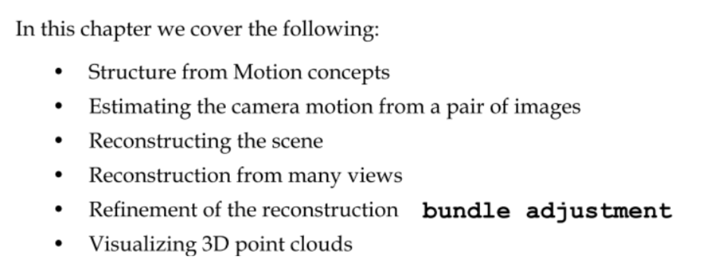

This book is a good tutorial to explain SFM ( structure from motion ) implementation . I give brief about in this charpter : SFM covered

Every knowledge was built by concepts at first .Structure from Motion concepts in Section 1 to tell us that what is SFM ,about concepts related to SFM ,such as camera calibration ,triangulation of 3d points ,camera motion ,the brief of principle that how to reconstruction 3D object , etc..
Estimating the camera motion from a pair of images talk about that how to get Essential Matrix and decompose it to obtain the R, t from two key images which are taken from monocular with sequence time , where R is rotation matrix of camera motion ,and the t is translation matrix of camera motion . Briefly ,R , t is two key matrix to consist of camera motion .
Reconstructing the scene to tell us that after extract camera motion matrix , we use triangulation method and motion matrix to reconstruct 3d points into the scene ,but only to use two camera views . Then this book give the mothed how to extract high quality 3d points by using contrasting two 2d points . one of the point is original in the photo and another is reimaged point from 3d points .
According the method from Section3 , the principle of Reconstruction from many views would be same . So it just does more procedures to be done .
Refinement of the reconstruction .This process is helpful for get precise and high quality 3d points . The known as the process of Bundle Adjustment(BA) ,helping for refining and optimizing the reconstructed scene . One implementation of a bundle adjustment algorithm is Simple Sparse Bundle Adjustment (SSBA) . You will see the illustration of construction between algorithm applied and doesn’t .
Visualizing 3D point clouds ,this section give a introduction about visualization tool, PCL (point cloud library) , The Point Cloud Library (PCL) is a standalone, large scale, open project for 2D/3D image and point cloud processing. Also could be use in this case—SFM.